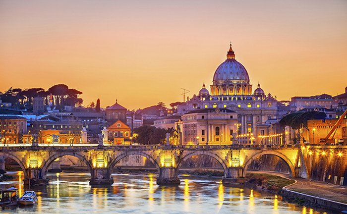
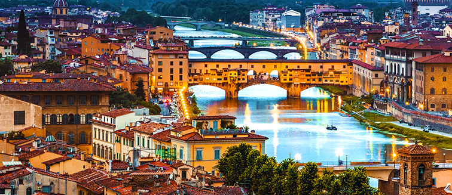

Florencia es una ciudad que ha cultivado un interés manifiesto por el arte y la cultura, por la ciencia y el conocimiento, en definitiva, por el Humanismo. No en vano, aquí nació el Renacimiento –y también alcanzó su máximo esplendor–, dándole un portazo definitivo a la Edad Media y a los siglos de oscurantismo, de los que, en cualquier caso, también guarda bellos recuerdos arquitectónicos: el Baptisterio de San Giovanni, el Ponte Vecchio, el Palazzo Vecchio… Florencia es el epicentro de esa nueva corriente que tomaba al hombre y sus capacidades como nueva medida de las cosas.
Por influencia de su clase dirigente, en especial la potente dinastía de los Médici y más tarde también la de los Lorena, la fisonomía florentina fue cortejada y agasajada por una impresionante colección de arquitectos, escultores y pintores (la mayoría de la propia tierra: florentinos o toscanos), que hicieron de la ciudad lo que es hoy, un gran museo al aire libre, se mire por donde se mire. Plazas exquisitas, hermosas iglesias, estrechas callejuelas, palacios, jardines y puntos panorámicos… La vista en la capital toscana no descansa nunca.
Como buena urbe humanista, tiene un diámetro hecho a medida del hombre y se recorre a pie perfectamente, esquivando, eso sí, a multitud de visitantes embelesados a cada paso ante los múltiples detalles de su arquitectura. Su centro histórico, que fue declarado Patrimonio de la Humanidad en 1982, se divide a su vez en cuatro espacios diferenciados: Santa Maria Novella (en el noroeste), San Giovanni (noreste), Santa Croce (sureste) y Santo Spirito (suroeste). Y dentro de estas cuatro subdivisiones, su plato fuerte se concentra en dos plazas del corazón histórico de San Giovanni.
Una simboliza el poder religioso y la otra, el político. En la primera, la Piazza del Duomo, Brunelleschi firma la obra de arte que se ha convertido en símbolo de la ciudad, la inmensa cúpula que en 1436 coronó la obra iniciada por Arnolfo di Cambio, la catedral de Santa Maria del Fiore. Sus interiores corren a cargo de artistas del Quattrocento toscano (como Lucca Della Robbia y Andrea del Castagno), mientras que su torre-campanario exterior, Il Campanile, es obra de Giotto, una delicia gótica del Trecento con algo más de 82 metros que regalan unas preciosas vistas tras subir más de 400 escalones. De igual forma, los 463 que conducen hacia lo alto de la cúpula de Brunelleschi también merecen el esfuerzo puesto que su panorámica resulta imprescindible.
La Puerta del Paraíso- A pocos metros de la catedral se divisa ya otra obra maestra, el Baptisterio de San Juan. La ciudad es así un dulce empacho artístico sin tregua. Este baptisterio, de planta octogonal y revestido de mármol, es el dueño de las tres puertas talladas en bronce más famosas de la historia del arte. La puerta sur, gótica, corrió a cargo de Andrea Pisano, mientras que la norte y la este las realizó Ghiberti en estilo renacentista. Esta última es la célebre Puerta del Paraíso, cuyos relieves representan las escenas del Antiguo Testamento, aunque los originales están en el vecino Museo dell´Opera del Duomo.
El segundo plato fuerte que debe incluir toda visita es la Piazza della Signoria, en la que convergen el gótico Palazzo Vecchio y la Loggia della Signoria. El primero era la antigua sede de la clase política local, después de la poderosa familia Médici y hoy acoge al Ayuntamiento y un museo. El segundo edificio corresponde a la lonja del siglo XIV donde se celebraban los actos políticos, un espacio abierto mediante grandes arcos y decorado con estatuas de la talla del Perseo, de Cellini, o El rapto de las sabinas, de Juan de Bolonia. Sin salir de este escenario se puede admirar la Fuente de Neptuno, la estatua ecuestre de Cosme I de Médici, la célebre copia del David de Miguel Ángel y la del León de Donatello, símbolo de Florencia (la talla original se encuentra en el Museo del Bargello). Y aún sin abandonar la plaza se descubre la Galleria degli Uffizi, con salas dedicadas a Botticelli, Leonardo da Vinci, Miguel Ángel, Rafael, Tiziano y Tintoretto.
Concentración de belleza - Las almas sensibles aún pueden enriquecer más la visita descubriendo la basílica de la Santa Croce, la que provocó en Stendhal el famoso síndrome que aturde los sentidos y provoca vértigo y sensación de ahogo ante la sobrecogedora concentración de belleza. Se trata de un museo de los estilos gótico y renacentista, con frescos de Giotto y Tadeo Gaddi, esculturas de Donatello, la capilla de la familia Pazzi –diseñada por Brunelleschi–, terracotas esmaltadas por Della Robbia y el panteón particular de grandes genios toscanos, como Miguel Ángel, Galileo o Maquiavelo.
Y para terminar este bautismo, tras el natural aturdimiento, nada como un romántico paseo por la zona del Ponte Vecchio, con sus estrechas calles y un ambiente medieval que se percibe en sus negocios, fundamentalmente orfebrerías a las que el tiempo parece no haberles afectado, pues siguen manteniendo ese toque de tradición que casa tan bien con la bella Florencia.
Hoteles: Amanecer de lujo - Amanecer en Florencia es uno de esos lujos que al menos una vez en la vida hay que darse. El buen gusto italiano se encuentra en la mayor parte de las opciones de alojamiento que ofrece la capital toscana, independientemente de sus estrellas. Un ejemplo clásico en su estilo es la céntrica Antica Torre (Via dei Tornabuoni, 1. www.tornabuoni1.com), una casa-torre del siglo XIII cuyo principal reclamo son sus fantásticas vistas desde la terraza.
Otro concepto bien distinto es el que ofrece el JK Place Florence (Piazza Santa Maria Novella, 7. www.jkplace.com), un exquisito boutique hotel con un toque muy personal en su servicio y una decoración moderna y acogedora en sus 20 habitaciones. Igualmente moderna y dominada por el diseño es la propuesta de Riva Lofts (Via Baccio Bandinelli, 98. www.rivalofts.com), un concepto para presupuestos algo más ajustados desarrollado frente al parque Le Cascine, en la orilla del río Arno. Se trata de una fábrica del siglo XIX reconvertida en nueve estudios con mucho encanto.
Todos tienen terraza privada, estupendas vistas y acceso a la piscina del jardín. Como contrapartida, el lujo refinado que propone el Palazzo Vecchietti (Via degli Strozzi, 4. www.palazzovecchietti.com) también resulta muy tentador. Cuenta con un total de 14 habitaciones, suites y apartamentos en una residencia de época. Se encuentra en la calle de las compras por excelencia de Florencia, en pleno centro. Quienes deseen un poco más de romanticismo seguramente se enamoren de la propuesta de Luxury Location Florence (www.luxurylocationflorence.com), que cuenta con el Palazzo Capponi (Via Gino Capponi, 26). Un palacio en toda regla, cuya fachada se inspira en la del Palazzo Pitti, mientras en sus espacios interiores se dejan llevar por el lujo y la opulencia más clásicas y propias de las mansiones italianas del siglo XVIII. Aquí se celebran todo tipo de eventos, y para dormir han habilitado en la última planta del palacio Home in Palace (www.homeinpalace.it), tres modernas habitaciones y una suite cuyos precios no resultan nada desorbitados.